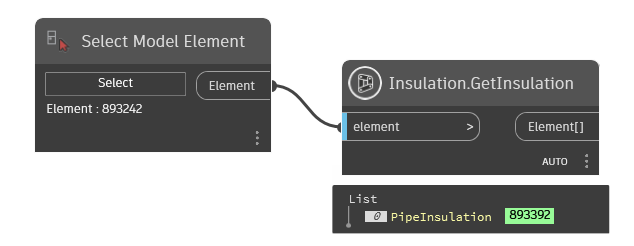
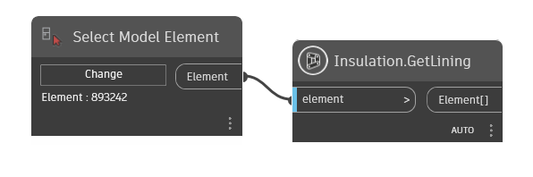
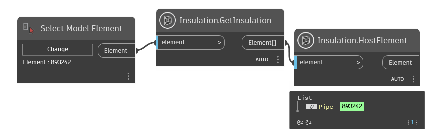
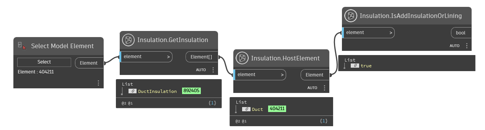
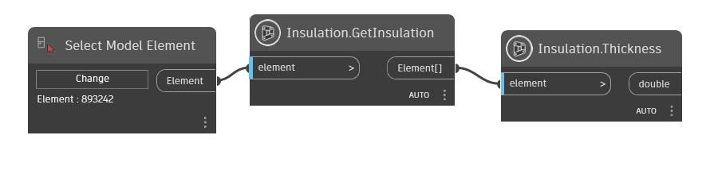

Class Insulation
- Namespace
- OpenMEP.Element
- Assembly
- OpenMEP.dll
Acts as the base class for duct insulation, pipe insulation and duct lining elements.
public class Insulation- Inheritance
-
Insulation
- Inherited Members
Methods
AddInsulation(Element, Element, double)
Creates a new instance of insulation.
public static Element? AddInsulation(Element element, Element insulationType, double thickness)Parameters
elementElementThe pipe, fitting, accessory Element to which insulation will be added.
insulationTypeElementThe insulation type. If the input pipe insulation type is InvalidElementId, the default insulation type from the document will be used.
thicknessdoubleThe thickness of the insulation.
Returns
- Element
The newly created pipe insulation.
Examples

Exceptions
- Autodesk.Revit.Exceptions.ArgumentException
This id does not represent a pipe, fitting, or accessory element. -or- This pipe insulation type is invalid. -or- Thickness is not valid for assignment to insulation or lining elements.
- Autodesk.Revit.Exceptions.ArgumentNullException
A non-optional argument was null
- Autodesk.Revit.Exceptions.DisabledDisciplineException
None of the following disciplines is enabled: Mechanical Electrical Piping.
- Autodesk.Revit.Exceptions.InvalidOperationException
The document is in failure mode: an operation has failed, and Revit requires the user to either cancel the operation or fix the problem (usually by deleting certain elements).
- Autodesk.Revit.Exceptions.ModificationForbiddenException
The document is in failure mode: an operation has failed, and Revit requires the user to either cancel the operation or fix the problem (usually by deleting certain elements). -or- The document is being loaded, or is in the midst of another sensitive process.
- Autodesk.Revit.Exceptions.ModificationOutsideTransactionException
The document has no open transaction.
GetInsulation(Element)
Returns the insulation elements associated to a given element.
public static List<Element?> GetInsulation(Element element)Parameters
elementElementThe element.
Returns
- List<Element>
A collection of the insulation elements.
Examples

Exceptions
- Autodesk.Revit.Exceptions.ArgumentException
This id does not represent a valid host for insulation.
- Autodesk.Revit.Exceptions.ArgumentNullException
A non-optional argument was NULL
GetLining(Element)
Returns the ids of the lining elements associated to a given element.
public static List<Element?> GetLining(Element element)Parameters
elementElementThe element.
Returns
- List<Element>
A collection of the ids of the lining elements.
Examples

Exceptions
- Autodesk.Revit.Exceptions.ArgumentException
This id does not represent a duct, fitting, or accessory element.
- Autodesk.Revit.Exceptions.ArgumentNullException
A non-optional argument was null
HostElement(Element)
The the host element for the insulation or lining element.
[NodeCategory("Query")]
public static Element? HostElement(Element element)Parameters
elementElementthe insulation element
Returns
- Element
Examples

IsAddInsulationOrLining(Element)
Checks if the element is added insulation or added lining.
[NodeCategory("Query")]
public static bool IsAddInsulationOrLining(Element element)Parameters
elementElementthe element to check
Returns
- bool
true if element is insulation
Examples

Thickness(Element)
The id of the host element for the insulation or lining element.
[NodeCategory("Query")]
public static double? Thickness(Element element)Parameters
elementElement
Returns
Examples
